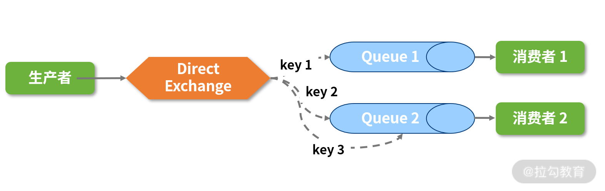

- 00 开篇词 从零开始：为什么要学习 Spring Boot？.md.html
- 01 家族生态：如何正确理解 Spring 家族的技术体系？.md.html
- 02 案例驱动：如何剖析一个 Spring Web 应用程序？.md.html
- 03 多维配置：如何使用 Spring Boot 中的配置体系？.md.html
- 04 定制配置：如何创建和管理自定义的配置信息？.md.html
- 05 自动配置：如何正确理解 Spring Boot 自动配置实现原理？.md.html
- 06 基础规范：如何理解 JDBC 关系型数据库访问规范？.md.html
- 07 数据访问：如何使用 JdbcTemplate 访问关系型数据库？.md.html
- 08 数据访问：如何剖析 JdbcTemplate 数据访问实现原理？.md.html
- 09 数据抽象：Spring Data 如何对数据访问过程进行统一抽象？.md.html
- 10 ORM 集成：如何使用 Spring Data JPA 访问关系型数据库？.md.html
- 11 服务发布：如何构建一个 RESTful 风格的 Web 服务？.md.html
- 12 服务调用：如何使用 RestTemplate 消费 RESTful 服务？.md.html
- 13 服务调用：如何正确理解 RestTemplate 远程调用实现原理？.md.html
- 14 消息驱动：如何使用 KafkaTemplate 集成 Kafka？.md.html
- 15 消息驱动：如何使用 JmsTemplate 集成 ActiveMQ？.md.html
- 16 消息驱动：如何使用 RabbitTemplate 集成 RabbitMQ？.md.html
- 17 安全架构：如何理解 Spring 安全体系的整体架构？.md.html
- 18 用户认证：如何基于 Spring Security 构建用户认证体系？.md.html
- 19 服务授权：如何基于 Spring Security 确保请求安全访问？.md.html
- 20 服务监控：如何使用 Actuator 组件实现系统监控？.md.html
- 21 指标定制：如何实现自定义度量指标和 Actuator 端点？.md.html
- 22 运行管理：如何使用 Admin Server 管理 Spring 应用程序？.md.html
- 23 数据测试：如何使用 Spring 测试数据访问层组件？.md.html
- 24 服务测试：如何使用 Spring 测试 Web 服务层组件？.md.html
- 结束语 以终为始：Spring Boot 总结和展望.md.html
- 捐赠
16 消息驱动：如何使用 RabbitTemplate 集成 RabbitMQ？
15 讲我们介绍了基于 ActiveMQ 和 JmsTemplate 实现消息发送和消费，并重构了 SpringCSS 案例系统中的 account-service 和 customer-service 服务。
今天，我们将介绍另一款主流的消息中间件 RabbitMQ，并基于 RabbitTemplate 模板工具类为 SpringCSS 案例添加对应的消息通信机制。
AMQP 规范与 RabbitMQ
AMQP（Advanced Message Queuing Protocol）是一个提供统一消息服务的应用层标准高级消息队列规范。和 JMS 规范一样，AMQP 描述了一套模块化的组件及组件之间进行连接的标准规则，用于明确客户端与服务器交互的语义。而业界也存在一批实现 AMQP 规范的框架，其中极具代表性的是 RabbitMQ。
AMQP 规范
在 AMQP 规范中存在三个核心组件，分别是交换器（Exchange）、消息队列（Queue）和绑定（Binding）。其中交换器用于接收应用程序发送的消息，并根据一定的规则将这些消息路由发送到消息队列中；消息队列用于存储消息，直到这些消息被消费者安全处理完毕；而绑定定义了交换器和消息队列之间的关联，为它们提供了路由规则。
在 AMQP 规范中并没有明确指明类似 JMS 中一对一的点对点模型和一对多的发布-订阅模型，不过通过控制 Exchange 与 Queue 之间的路由规则，我们可以很容易地模拟 Topic 这种典型消息中间件的概念。
如果存在多个 Queue，Exchange 如何知道把消息发送到哪个 Queue 中呢？
通过 Binding 规则设置路由信息即可。在与多个 Queue 关联之后，Exchange 中会存在一个路由表，这个表中维护着每个 Queue 存储消息的限制条件。
消息中包含一个路由键（Routing Key），它由消息发送者产生，并提供给 Exchange 路由这条消息的标准。而 Exchange 会检查 Routing Key，并结合路由算法决定将消息路由发送到哪个 Queue 中。
通过下面 Exchange 与 Queue 之间的路由关系图，我们可以看到一条来自生产者的消息通过 Exchange 中的路由算法可以发送给一个或多个 Queue，从而实现点对点和发布订阅功能。

AMQP 路由关系图
上图中，不同的路由算法存在不同的 Exchange 类型，而 AMQP 规范中指定了直接式交换器（Direct Exchange）、广播式交换器（Fanout Exchange）、主题式交换器（Topic Exchange）和消息头式交换器（Header Exchange）这几种 Exchange 类型，不过这一讲我们将重点介绍直接式交换器。
通过精确匹配消息的 Routing Key，直接式交换器可以将消息路由发送到零个或多个队列中，如下图所示：

Direct Exchange 示意图
RabbitMQ 基本架构
RabbitMQ 使用 Erlang 语言开发的 AMQP 规范标准实现框架，而 ConnectionFactory、Connection、Channel 是 RabbitMQ 对外提供的 API 中最基本的对象，都需要遵循 AMQP 规范的建议。其中，Channel 是应用程序与 RabbitMQ 交互过程中最重要的一个接口，因为我们大部分的业务操作需要通过 Channel 接口完成，如定义 Queue、定义 Exchange、绑定 Queue 与 Exchange、发布消息等。
如果想启动 RabbitMQ，我们只需要运行 rabbitmq-server.sh 文件即可。不过，因为 RabbitMQ 依赖于 Erlang，所以首先我们需要确保安装上 Erlang 环境。
接下来，我们一起看下如何使用 Spring 框架所提供的 RabbitTemplate 模板工具类集成 RabbitMQ。
使用 RabbitTemplate 集成 RabbitMQ
如果想使用 RabbitTemplate 集成 RabbitMQ，首先我们需要在 Spring Boot 应用程序中添加对 spring-boot-starter-amqp 的依赖，如下代码所示：
<dependency>
<groupId>org.springframework.boot</groupId>
<artifactId>spring-boot-starter-amqp</artifactId>
</dependency>
使用 RabbitTemplate 发送消息
和其他模板类一样，RabbitTemplate 也提供了一批 send 方法用来发送消息，如下代码所示：
@Override
public void send(Message message) throws AmqpException {
send(this.exchange, this.routingKey, message);
}
@Override
public void send(String routingKey, Message message) throws AmqpException {
send(this.exchange, routingKey, message);
}
@Override
public void send(final String exchange, final String routingKey, final Message message) throws AmqpException {
send(exchange, routingKey, message, null);
}
在这里可以看到，我们指定了消息发送的 Exchange 及用于消息路由的路由键 RoutingKey。因为这些 send 方法发送的是原生消息对象，所以在与业务代码进行集成时，我们需要将业务对象转换为 Message 对象，示例代码如下所示：
public void sendDemoObject(DemoObject demoObject) {
MessageConverter converter = rabbitTemplate.getMessageConverter();
MessageProperties props = new MessageProperties();
Message message = converter.toMessage(demoObject, props);
rabbitTemplate.send("demo.queue", message);
}
如果我们不想在业务代码中嵌入 Message 等原生消息对象，还可以使用 RabbitTemplate 的 convertAndSend 方法组进行实现，如下代码所示：
@Override
public void convertAndSend(Object object) throws AmqpException {
convertAndSend(this.exchange, this.routingKey, object, (CorrelationData) null);
}
@Override
public void correlationConvertAndSend(Object object, CorrelationData correlationData) throws AmqpException {
convertAndSend(this.exchange, this.routingKey, object, correlationData);
}
@Override
public void convertAndSend(String routingKey, final Object object) throws AmqpException {
convertAndSend(this.exchange, routingKey, object, (CorrelationData) null);
}
@Override
public void convertAndSend(String routingKey, final Object object, CorrelationData correlationData)
throws AmqpException {
convertAndSend(this.exchange, routingKey, object, correlationData);
}
@Override
public void convertAndSend(String exchange, String routingKey, final Object object) throws AmqpException {
convertAndSend(exchange, routingKey, object, (CorrelationData) null);
}
上述 convertAndSend 方法组在内部就完成了业务对象向原生消息对象的自动转换过程，因此，我们可以使用如下所示的代码来简化消息发送过程。
public void sendDemoObject(DemoObject demoObject) {
rabbitTemplate.convertAndSend("demo.queue", demoObject);
}
当然，有时候我们需要在消息发送的过程中为消息添加一些属性，这就不可避免需要操作原生 Message 对象，而 RabbitTemplate 也提供了一组 convertAndSend 重载方法应对这种场景，如下代码所示：
@Override
public void convertAndSend(String exchange, String routingKey, final Object message,
final MessagePostProcessor messagePostProcessor, CorrelationData correlationData) throws AmqpException {
Message messageToSend = convertMessageIfNecessary(message);
messageToSend = messagePostProcessor.postProcessMessage(messageToSend, correlationData);
send(exchange, routingKey, messageToSend, correlationData);
}
注意这里，我们使用了一个 MessagePostProcessor 类对所生成的消息进行后处理，MessagePostProcessor 的使用方式如下代码所示：
rabbitTemplate.convertAndSend(“demo.queue”, event, new MessagePostProcessor() {
@Override
public Message postProcessMessage(Message message) throws AmqpException {
//针对 Message 的处理
return message;
}
});
使用 RabbitTemplate 的最后一步是在配置文件中添加配置项，在配置时我们需要指定 RabbitMQ 服务器的地址、端口、用户名和密码等信息，如下代码所示：
spring:
rabbitmq:
host: 127.0.0.1
port: 5672
username: guest
password: guest
virtual-host: DemoHost
注意，出于对多租户和安全因素的考虑，AMQP 还提出了虚拟主机（Virtual Host）概念，因此这里出现了一个 virtual-host 配置项。
Virtual Host 类似于权限控制组，内部可以包含若干个 Exchange 和 Queue。多个不同用户使用同一个 RabbitMQ 服务器提供的服务时，我们可以将其划分为多个 Virtual Host，并在自己的 Virtual Host 中创建相应组件，如下图所示：

添加了 Virtual Host 的 AMQP 模型
使用 RabbitTemplate 消费消息
和 JmsTemplate 一样，使用 RabbitTemplate 消费消息时，我们也可以使用推模式和拉模式。
在拉模式下，使用 RabbitTemplate 的典型示例如下代码所示：
public DemoEvent receiveEvent() {
return (DemoEvent) rabbitTemplate.receiveAndConvert(“demo.queue”);
}
这里，我们使用了 RabbitTemplate 中的 receiveAndConvert 方法，该方法可以从一个指定的 Queue 中拉取消息，如下代码所示：
@Override
public Object receiveAndConvert(String queueName) throws AmqpException {
return receiveAndConvert(queueName, this.receiveTimeout);
}
这里请注意，内部的 receiveAndConvert 方法中出现了第二个参数 receiveTimeout，这个参数的默认值是 0，意味着即使调用 receiveAndConvert 时队列中没有消息，该方法也会立即返回一个空对象，而不会等待下一个消息的到来，这点与 15 讲介绍的 JmsTemplate 存在本质性的区别。
如果我们想实现与 JmsTemplate 一样的阻塞等待，设置好 receiveTimeout 参数即可，如下代码所示：
public DemoEvent receiveEvent() {
return (DemoEvent)rabbitTemplate.receiveAndConvert("demo.queue", 2000ms);
}
如果不想每次方法调用都指定 receiveTimeout，我们可以在配置文件中通过添加配置项的方式设置 RabbitTemplate 级别的时间，如下代码所示：
spring:
rabbitmq:
template:
receive-timeout: 2000
当然，RabbitTemplate 也提供了一组支持接收原生消息的 receive 方法，但我们还是建议使用 receiveAndConvert 方法实现拉模式下的消息消费。
介绍完拉模式，接下来我们介绍推模式，它的实现方法也很简单，如下代码所示：
@RabbitListener(queues = “demo.queue”)
public void handlerEvent(DemoEvent event) {
//TODO：添加消息处理逻辑
}
开发人员在 @RabbitListener 中指定目标队列即可自动接收来自该队列的消息，这种实现方式与 15 讲中介绍的 @JmsListener 完全一致。
在 SpringCSS 案例中集成 RabbitMQ
因为这三种模板工具类的使用方式非常类似，都可以用来提取公共代码形成统一的接口和抽象类，所以作为介绍消息中间件的最后一讲，我们想对 SpringCSS 案例中的三种模板工具类的集成方式进行抽象。
实现 account-service 消息生产者
在消息生产者的 account-service 中，我们提取了如下所示的 AccountChangedPublisher 作为消息发布的统一接口。
public interface AccountChangedPublisher {
void publishAccountChangedEvent(Account account, String operation);
}
请注意，这是一个面向业务的接口，没有使用用于消息通信的 AccountChangedEvent 对象。
而我们将在 AccountChangedPublisher 接口的实现类 AbstractAccountChangedPublisher 中完成对 AccountChangedEvent 对象的构建，如下代码所示：
public abstract class AbstractAccountChangedPublisher implements AccountChangedPublisher {
@Override
public void publishAccountChangedEvent(Account account, String operation) {
AccountMessage accountMessage = new AccountMessage(account.getId(), account.getAccountCode(), account.getAccountName());
AccountChangedEvent event = new AccountChangedEvent(AccountChangedEvent.class.getTypeName(),
operation.toString(), accountMessage);
publishEvent(event);
}
protected abstract void publishEvent(AccountChangedEvent event);
}
AbstractAccountChangedPublisher 是一个抽象类，我们基于传入的业务对象构建了一个消息对象 AccountChangedEvent，并通过 publishEvent 抽象方法发送消息。
针对不同的消息中间件，我们需要分别实现对应的 publishEvent 方法。以 Kafka 为例，我们重构了原有代码并提供了如下所示的 KafkaAccountChangedPublisher 实现类。
@Component("kafkaAccountChangedPublisher")
public class KafkaAccountChangedPublisher extends AbstractAccountChangedPublisher {
@Autowired
private KafkaTemplate<String, AccountChangedEvent> kafkaTemplate;
@Override
protected void publishEvent(AccountChangedEvent event) {
kafkaTemplate.send(AccountChannels.SPRINGCSS_ACCOUNT_TOPIC, event);
}
}
对 RabbitMQ 而言，RabbitMQAccountChangedPublisher 的实现方式也是类似，如下代码所示：
@Component("rabbitMQAccountChangedPublisher")
public class RabbitMQAccountChangedPublisher extends AbstractAccountChangedPublisher {
@Autowired
private RabbitTemplate rabbitTemplate;
@Override
protected void publishEvent(AccountChangedEvent event) {
rabbitTemplate.convertAndSend(AccountChannels.SPRINGCSS_ACCOUNT_QUEUE, event, new MessagePostProcessor() {
@Override
public Message postProcessMessage(Message message) throws AmqpException {
MessageProperties props = message.getMessageProperties();
props.setHeader("EVENT_SYSTEM", "SpringCSS");
return message;
}
});
}
}
对于 RabbitMQ 而言，在使用 RabbitMQAccountChangedPublisher 发送消息之前，我们需要先初始化 Exchange、Queue，以及两者之间的 Binding 关系，因此我们实现了如下所示的 RabbitMQMessagingConfig 配置类。
@Configuration
public class RabbitMQMessagingConfig {
public static final String SPRINGCSS_ACCOUNT_DIRECT_EXCHANGE = "springcss.account.exchange";
public static final String SPRINGCSS_ACCOUNT_ROUTING = "springcss.account.routing";
@Bean
public Queue SpringCssDirectQueue() {
return new Queue(AccountChannels.SPRINGCSS_ACCOUNT_QUEUE, true);
}
@Bean
public DirectExchange SpringCssDirectExchange() {
return new DirectExchange(SPRINGCSS_ACCOUNT_DIRECT_EXCHANGE, true, false);
}
@Bean
public Binding bindingDirect() {
return BindingBuilder.bind(SpringCssDirectQueue()).to(SpringCssDirectExchange())
.with(SPRINGCSS_ACCOUNT_ROUTING);
}
@Bean
public Jackson2JsonMessageConverter rabbitMQMessageConverter() {
return new Jackson2JsonMessageConverter();
}
}
上述代码中初始化了一个 DirectExchange、一个 Queue ，并设置了两者之间的绑定关系，同时我们还初始化了一个 Jackson2JsonMessageConverter 用于在消息发送过程中将消息转化为序列化对象，以便在网络上进行传输。
实现 customer-service 消息消费者
现在，回到 customer-service 服务，我们先看看提取用于接收消息的统一化接口 AccountChangedReceiver，如下代码所示：
public interface AccountChangedReceiver {
//Pull 模式下的消息接收方法
void receiveAccountChangedEvent();
//Push 模式下的消息接收方法
void handlerAccountChangedEvent(AccountChangedEvent event);
}
AccountChangedReceiver 分别定义了拉取模式和推送模式下的消息接收方法，同样我们也提取了一个抽象实现类 AbstractAccountChangedReceiver，如下代码所示：
public abstract class AbstractAccountChangedReceiver implements AccountChangedReceiver {
@Autowired
LocalAccountRepository localAccountRepository;
@Override
public void receiveAccountChangedEvent() {
AccountChangedEvent event = receiveEvent();
handleEvent(event);
}
protected void handleEvent(AccountChangedEvent event) {
AccountMessage account = event.getAccountMessage();
String operation = event.getOperation();
operateAccount(account, operation);
}
private void operateAccount(AccountMessage accountMessage, String operation) {
System.out.print(
accountMessage.getId() + ":" + accountMessage.getAccountCode() + ":" + accountMessage.getAccountName());
LocalAccount localAccount = new LocalAccount(accountMessage.getId(), accountMessage.getAccountCode(),
accountMessage.getAccountName());
if (operation.equals("ADD") || operation.equals("UPDATE")) {
localAccountRepository.save(localAccount);
} else {
localAccountRepository.delete(localAccount);
}
}
protected abstract AccountChangedEvent receiveEvent();
}
这里实现了 AccountChangedReceiver 接口的 receiveAccountChangedEvent 方法，并定义了一个 receiveEvent 抽象方法接收来自不同消息中间件的 AccountChangedEvent 消息。一旦 receiveAccountChangedEvent 方法获取了消息，我们将根据其中的 Account 对象及对应的操作更新本地数据库。
接下来我们看看 AbstractAccountChangedReceiver 中的一个实现类 RabbitMQAccountChangedReceiver，如下代码所示：
@Component("rabbitMQAccountChangedReceiver")
public class RabbitMQAccountChangedReceiver extends AbstractAccountChangedReceiver {
@Autowired
private RabbitTemplate rabbitTemplate;
@Override
public AccountChangedEvent receiveEvent() {
return (AccountChangedEvent) rabbitTemplate.receiveAndConvert(AccountChannels.SPRINGCSS_ACCOUNT_QUEUE);
}
@Override
@RabbitListener(queues = AccountChannels.SPRINGCSS_ACCOUNT_QUEUE)
public void handlerAccountChangedEvent(AccountChangedEvent event) {
super.handleEvent(event);
}
}
上述 RabbitMQAccountChangedReceiver 同时实现了 AbstractAccountChangedReceiver 的 receiveEvent 抽象方法及 AccountChangedReceiver 接口中的 handlerAccountChangedEvent 方法。其中 receiveEvent 方法用于主动拉取消息，而 handlerAccountChangedEvent 方法用于接受推动过来的消息，在该方法上我们添加了 @RabbitListener 注解。
接着我们来看下同样继承了 AbstractAccountChangedReceiver 抽象类的 KafkaAccountChangedListener 类，如下代码所示：
@Component
public class KafkaAccountChangedListener extends AbstractAccountChangedReceiver {
@Override
@KafkaListener(topics = AccountChannels.SPRINGCSS_ACCOUNT_TOPIC)
public void handlerAccountChangedEvent(AccountChangedEvent event) {
super.handleEvent(event);
}
@Override
protected AccountChangedEvent receiveEvent() {
return null;
}
}
我们知道 Kafka 只能通过推送方式获取消息，所以它只实现了 handlerAccountChangedEvent 方法，而 receiveEvent 方法为空。
小结与预告
这一讲，我们学习了最后一款消息中间件 RabbitMQ，并使用 Spring Boot 提供的 RabbitTemplate 完成了消息的发送和消费。同时，基于三种消息中间件的对接方式，我们提取了它们之间的共同点，并抽取了对应的接口和抽象类，重构了 SpringCSS 系统的实现过程。
Spring 为我们提供了一整套完整的安全解决方案，17 讲我们将对这套解决方案展开讨论。
© 2019 - 2023 Liangliang Lee. Powered by gin and hexo-theme-book.